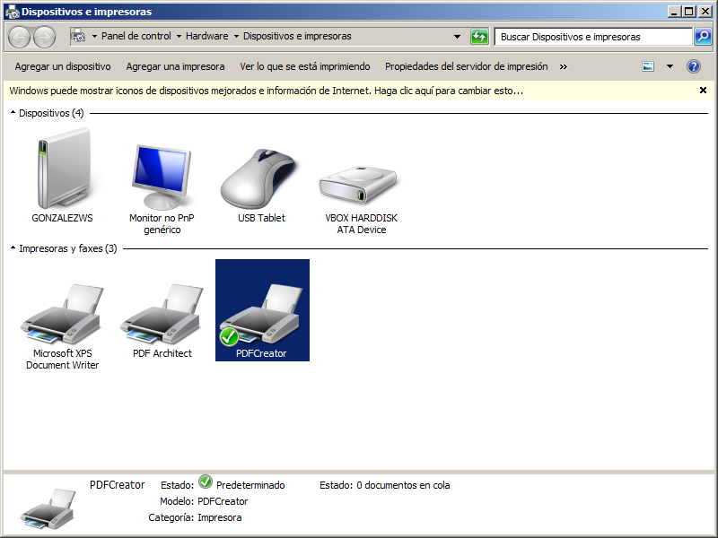
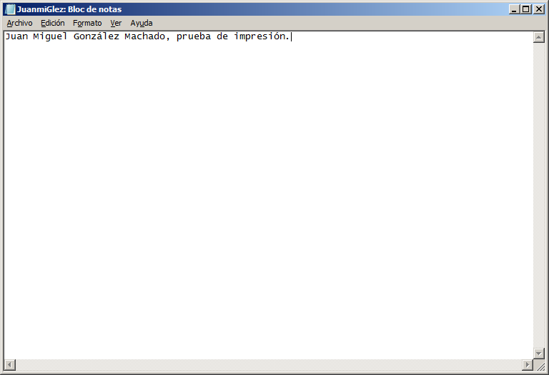
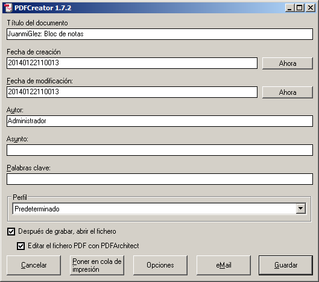
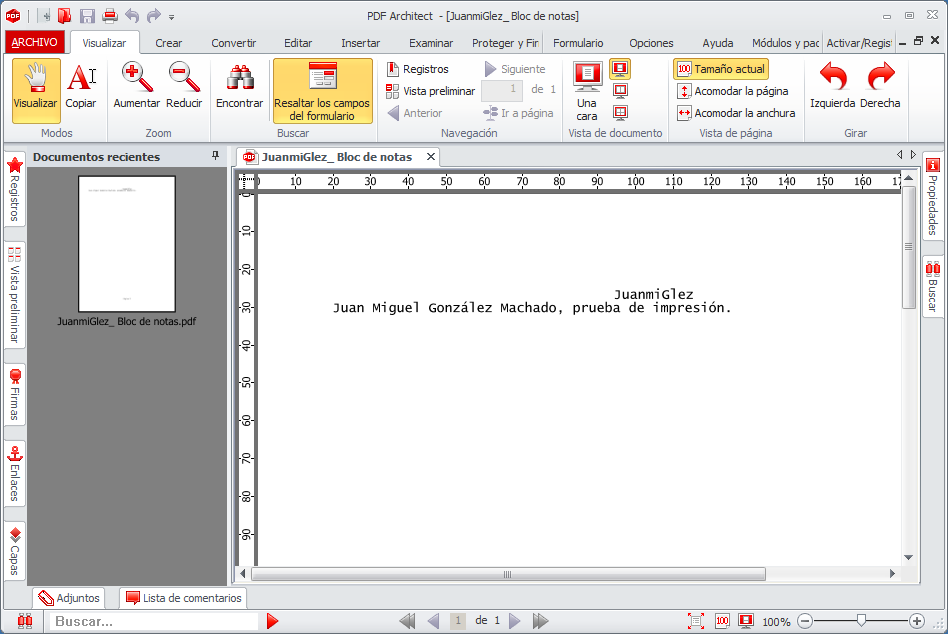
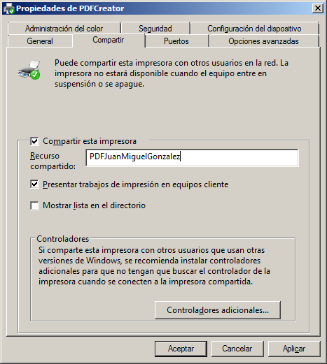
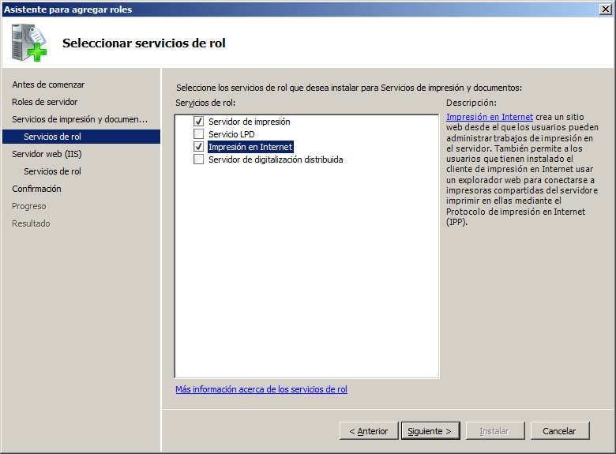
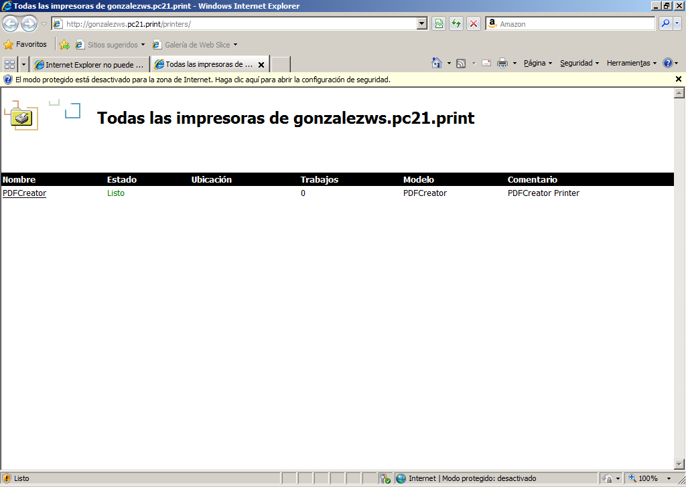
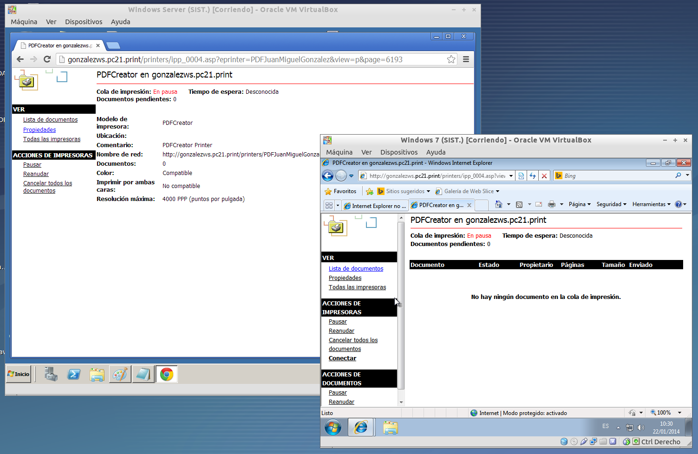
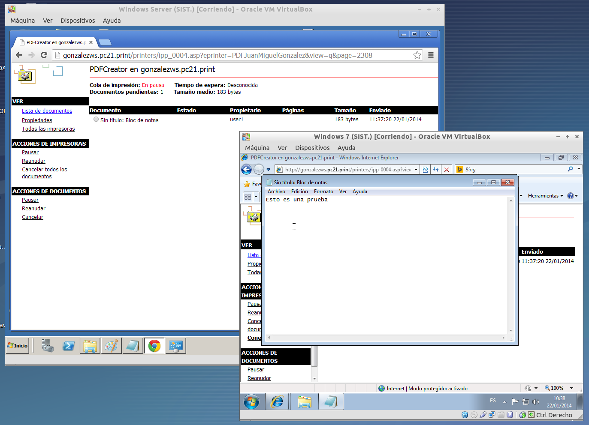

- Módulo: Sistemas Operativos
- Título del trabajo Servidor de Impresión
- Componentes del grupo: Juan Miguel González
- Curso Académico: 2013/2014
- Fecha de entrega: 22 de Enero
Vamos a conectar e instalar localmente una impresora al servidor Windows 2003, de modo que estén disponibles para ser accedidas por los clientes del dominio. Vamos a instalar un programa llamado PDFCreator . PDFCreator es una utilidad completamente gratuita con la que podrás crear archivos PDF desde cualquier aplicación, desde el Bloc de notas hasta Word, Excel, etc. Comprobamos que efectivamente la impresora se ha agregado correctamente a nuestro servidor.

Probamos el funcionamiento de la impresora mandando a imprimir un documento de texto cualquiera.



Procederemos ahora a compartir la impresora en red para que nuestros usuarios del propio servidor puedan tener acceso a este dispositivo.


Accedemos ahora vía web a la impresora. Este paso puede realizarse tanto desde el propio servidor como desde un equipo unido al dominio.

Desde ahí ya podemos pausar la impresora, reanudar la cola, o ver la configuración de todas las impresoras instaladas en el servidor.

